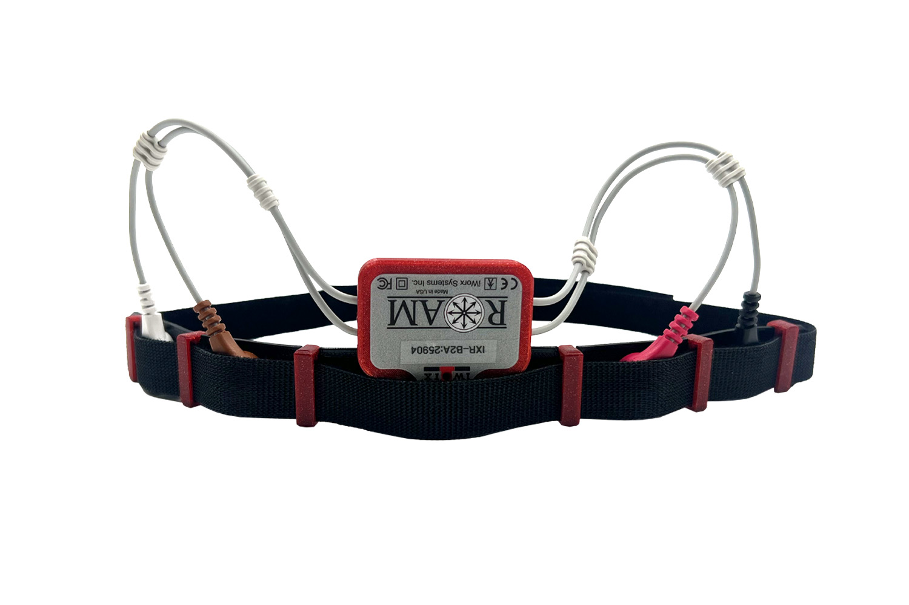

Wireless ECG/EEG System

This was my first experience developing code for a BLE-connected device. It wirelessly transmits accelerometer and ECG/EEG data to a receiver so the data can be processed by data logging software. I didn’t get a chance to work on the hardware, but I wrote the firmware and designed the enclosure and charging box. This was the first acquisition system I worked on that didn’t have (nearly) real-time data transmission, which resulted in some special requirements for buffering and packing the data. There were two variants of receiver: USB and a proprietary UART for interfacing with an existing acquisition system. The chain of communication was composed of three microcontrollers for the USB and four for the UART. This necessitated a communication structure that allowed me to address data to or from some target microcontroller.
Bandwidth can become a problem: you need enough overhead to “catch up” when one or more packets fail to transmit from the peripheral. With a larger MTU, the impact of a dropped packet becomes greater than with a smaller MTU, provided your latency is held constant. With a fixed data rate, minimizing latency inherently reduces the MTU size, which improves data fidelity. If the device dropped a packet, I needed to make sure I had enough overhead to send two packets without increasing latency long-term. To solve this problem, I set the latency as low as it would go (7.5 ms) but set up my peripheral to only transmit data every 20 ms. The difference between the connection latency and packet timer on the device allows it to recover from failed transmissions more quickly. The device will only buffer so many packets before it is forced to start dropping packets to acquire new data.
During testing, I noticed the timing on the data would stretch if I fed a periodic signal into the Roam and overlaid the source signal with what the Roam acquired. In my initial implementation, the ISR clocked data from the frame buffer into the main circular acquisition buffer. Through root-cause analysis, I determined this was happening because not enough data was getting clocked out of the acquisition buffer, which sets the timing. I confirmed the timing was bad by having the ISR toggle a pin so I could see the acquisition clock. It was all over the place and would miss a cycle every few seconds! The hardware was spending too much time servicing the BLE stack and didn't always have enough time to service the timer's ISR. This event was fairly rare, even when the signal integrity was quite poor, so I only had to correct for the occasional missed sample buffer. To solve this, I used the PPI peripheral on the nRF52 to feed the compare event from the acquisition timer into a second timer's CNT register. Then the acquisition loop just needed to clock that many frames of data into the buffer. Worst case, this resulted in a sample getting resampled every couple of seconds when sampling multiple channels at ≥ 2 kHz per channel, which was tolerable.
I also designed an EEG headband (shown above) for use with the Roam. It's 3D-printed from a very flexible filament and features grooves that hold the 3D-printed red loops in place, plus five holes that hold silver/silver-chloride button electrodes, onto which the Roam snaps. A hook-and-loop strap is fed through the red loops to secure the band to the user's head.
I modeled and printed a charger box with an annular snap that gripped the device pocket and held it in place during charging. It worked OK, but sometimes, if you didn’t insert it right, it wouldn’t make good contact with the charging pads. The analog section was already shielded by a steel can to protect it from noise. I figured I could also use that can to magnetically pull the device into the right position. This worked much better and was implemented in my final revision. The Roam lettering on the top of the box had the dual purpose of looking cool and holding the device in place.
Here is a little animation I made in Blender.